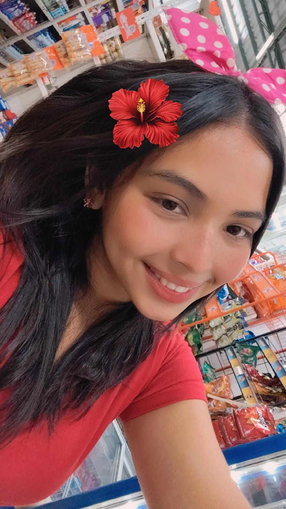

Hola, mi nombre es

Mi objetivo principal como estudiante es aprovechar al máximo cada clase para expandir mis conocimientos. Me esfuerzo por practicar diariamente y concentrarme profundamente en cada tema, ya que considero que entender bien los fundamentos es clave para desarrollarme de manera sólida.
Además de mi interés por la tecnología, disfruto aprender por mi cuenta, explorar nuevas herramientas informáticas y mantenerme actualizado con las tendencias del sector. Considero que el aprendizaje continuo es fundamental para mantenerse vigente en un campo tan dinámico como el de la tecnología.
Se trata de una serie de invitaciones online que destacan por su funcionalidad de confirmación de asistencia interactiva, la cual dirige automáticamente al chat del anfitrión.
Es una solución digital para restaurantes que moderniza la presentación de platillos. Su formato virtual e interactivo facilita la navegación y selección a los clientes, mejorando la imagen del local.
Es una página organizada y modular diseñada como una vitrina digital interactiva para presentar de manera integral lo mejor de Colimes, destacando desde su gastronomía hasta sus lugares emblemáticos y naturales, como las playas fluviales y el Florecimiento de Guayacanes.
Soy una estudiante de Tecnología de la Información altamente motivada, con una base sólida en principios de programación, análisis de sistemas y metodologías ágiles. Mi enfoque se centra en la resolución analítica de problemas y en la aplicación proactiva de nuevas herramientas para generar soluciones tecnológicas eficientes y escalables. Busco aplicar mi compromiso con el aprendizaje continuo y mis habilidades de comunicación técnica en un entorno profesional que impulse la innovación y la calidad.
Poseo una fuerte capacidad para identificar, analizar y descomponer problemas complejos de sistemas o software en componentes manejables. Aplico un pensamiento lógico y metódico para desarrollar soluciones eficientes y escalables, incluso bajo presión.
Muestro una alta adaptabilidad a nuevas tecnologías, lenguajes de programación y metodologías de trabajo (como Agile/Scrum). Me comprometo con el aprendizaje continuo, manteniéndome siempre al día con las últimas tendencias y frameworks de la industria de TI.
Soy una persona proactiva que no espera instrucciones para mejorar un proceso o solucionar una potencial vulnerabilidad. Tengo la iniciativa de buscar nuevas herramientas, investigar documentación y proponer mejoras innovadoras para optimizar el rendimiento y la seguridad de los proyectos.
Mi trabajo se caracteriza por una meticulosa atención al detalle, esencial en la programación y administración de sistemas. Aseguro que el código, las configuraciones y los reportes sean precisos, estén bien documentados y cumplan con los más altos estándares de calidad y usabilidad.
Tengo la habilidad de traducir conceptos técnicos complejos a un lenguaje claro y comprensible, tanto para equipos técnicos como para usuarios no técnicos. Esto facilita la colaboración en proyectos y la capacitación efectiva de los usuarios finales.
Me desempeño excelentemente en equipos multidisciplinarios y virtuales. Utilizo herramientas de colaboración digital (Git, plataformas cloud, tracking de tareas) para sincronizar esfuerzos, mantener la transparencia del proyecto y lograr objetivos comunes de manera eficiente.